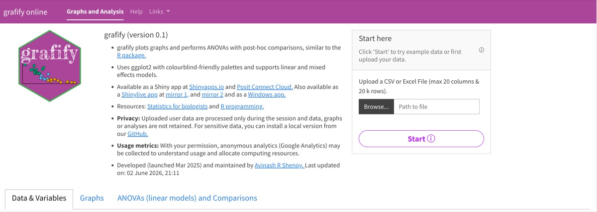

No.027
2026-08-30
SciViz Kit · 推文与教程
grafify online：绘图 + 统计一体
选图、跑统计检验、标显著性一次做完，适合不想写 R 的人。
grafify统计检验绘图
三步走完：选图 → 填数据 → 出图
grafify online 把常见统计图（散点 + 均值线、箱线图、Before–After 配对图等）和背后的统计检验打包成三步：左侧选图型，右侧填参数，不用写一行 R 代码。适合没有编程经验、但需要完成数据分析与作图的科研新手、医学生与生物老师。

适合谁：一次把图画完、检验跑完
| 人群 | 典型场景 |
|---|---|
| 研究生 | 快速出图写论文，不必为一次性作图装 R |
| 高校教师 | 课堂演示，学生打开浏览器就能跟着做 |
| 实验技术员 | 日常数据探索与组会汇报 |
| 科研助理 | 整理数据、批量出图 |
| 转行新手 | 从图形界面理解统计检验在做什么 |
它解决的问题很集中：不装软件（浏览器直接可用）、不记代码（点选变量即可出图）、统计自动生成（含效应量、置信区间、多重校正）、配色色盲友好可直接投稿。
能画什么、能检什么
| 图表 | 统计 |
|---|---|
| 箱线图、小提琴图、柱状图（可叠加散点） | 线性模型（OLS）替代传统 ANOVA |
| Before–After 连线图（配对数据） | 混合效应模型（随机截距） |
| 散点图 + 趋势线 | 事后两两比较 + 效应量（Cohen's d） |
| 对数轴变换（log₁₀ / log₂） | FDR 多重校正（Benjamini–Hochberg） |
| — | 残差 QQ 图与密度图诊断 |
一个细节值得记住：坐标轴变换与统计是联动的——改成 log 轴后检验结果会跟着更新，不会出现「图上取了对数、检验还用原始值」的口径错位。
隐私与部署
在线版（shinyapps）数据只存在于当前会话，会话结束即清除；Shinylive 本地版完全在浏览器内运行，数据不出本机。涉及未发表数据的分析，优先用本地版。
上手三步
Step 1 · 准备数据
Excel 或 CSV，tidy 结构（每列一个变量），支持 .xlsx / .xls / .csv / .tsv。官网示例数据可直接加载，先体验再上传自己的；不会整理？照示例数据的列结构摆即可。
Step 2 · 选变量出图
在 Graphs 标签页选 X 轴、Y 轴、分组，点「Variables chosen」→「graffy my data」，图即生成；同一份数据可随时换图型，比较哪种表达最清楚。
Step 3 · 分析并导出
切到 ANOVAs 标签，选模型类型（简单 / 混合），点「Analyse my data」得到统计结果表与残差诊断图；图可下载为 PNG / SVG / PDF，结果表可直接复制。
延伸阅读与参考文献
- grafify: Easy graphs, ANOVAs and post-hoc comparisons. R package, CRAN.
cran.r-project.org/package=grafify - Wickham H. ggplot2: Elegant Graphics for Data Analysis. 2nd ed. Springer, 2016.
- Benjamini Y, Hochberg Y. Controlling the false discovery rate: a practical and powerful approach to multiple testing. Journal of the Royal Statistical Society B. 1995;57(1):289–300. doi:10.1111/j.2517-6161.1995.tb02031.x
SciViz Kit · 推文 No.027
2026-08-30